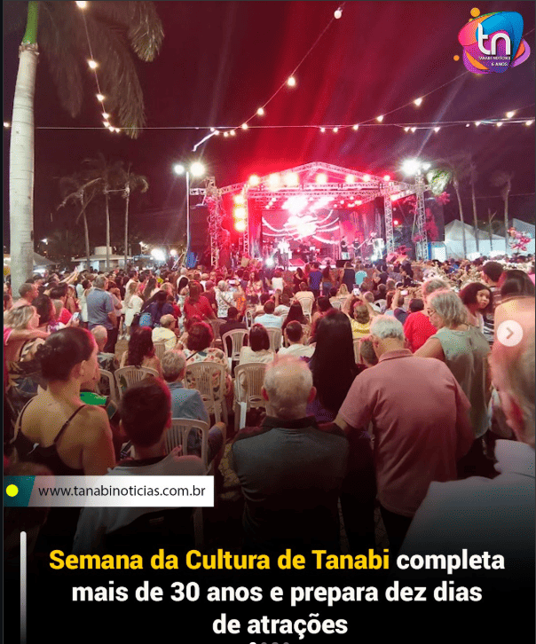

Tanabi faz parte da Microrregião de São José do Rio Preto, e possui uma área total de 747,22 km², uma população de 25.265 habitantes e 12.243 domicílios
Um pouco de sua História
Origem
Em 1860, às margens do Rio Jataí, o índio Joaquim Chico, remanescente dos Caiapós, construiu uma choupana onde instalou uma venda após abrir uma picada, que ligava o local às proximidades de São José do Rio Preto, local de onde trazia cachaça, fumo, rapadura e outros produtos da terra, que comercializava. Foi considerado o primeiro habitante do local, embora houvesse outros residentes nas cercanias, no decorrer da confluencia entre os Rios Jatai e Bacuri
Fundação
A fundação do povoado ocorreu em 4 de julho de 1882, quando foi celebrada uma missa para os moradores da região. A capela foi consagrada a Nossa Senhora da Conceição, dando origem ao nome Conceição do Jataí. Na mesma ocasião, foi erguido um cruzeiro de madeira, que passou a representar o marco da fundação do arraial de Jataí.
Em 1887, moradores doaram uma área de 75 alqueires para formar o patrimônio da localidade. A primeira capela permaneceu até 1891, quando foi substituída por uma construção de alvenaria.
Crescimento da cidade
Entre 1895 e 1900, foram realizados estudos e concluída a abertura da Estrada do Taboado. A estrada trouxe maior circulação para a região, por onde passavam tropas, boiadas, peões e boiadeiros. O crescimento do povoado continuou e, em 1902, Tanabi já possuía um distrito policial com cadeia própria.
O progresso continuou nas décadas seguintes. Em 1906, Tanabi foi elevada à categoria de distrito e, 3 de dezembro de 1924, tornou-se oficialmente município. A instalação do novo município ocorreu em 13 de março de 1925, consolidando a autonomia administrativa da cidade e marcando uma nova etapa em sua história.
Origem do nome
Tanabi é conhecido como "Tanabi" é derivado do guarani antigo tanambi, que significa "borboleta".
Assim, Tanabi adotou borboleta como seu simbolo, presente em seu Hino e até em sua bandeira
Onde fica?
Tanabi está localizada no interior do estado de SP , a 455 km da capital, SP
Eventos
Aniversário de Tanabi
Todos os anos, Tanabi comemora seu aniversário com um desfile pela Rua Coronel Militão, uma de suas principais vias. Nesse desfile, há o desfile de diversas escolas, corpo de bombeiros, carros alegóricos, entidades, associações da cidade, entre outros.
Festa do Peão
A Festa do Peão de Tanabi é um evento tradicional que ocorre anualmente na cidade, reunindo amantes da música sertaneja, rodeio e entretenimento. Durante a festa, são realizadas competições de montaria em touros e cavalos, além de shows musicais com artistas do gênero sertanejo. O evento atrai visitantes de diversas regiões, proporcionando momentos de diversão, cultura e celebração da tradição sertaneja.
Semana da Cultura
A Semana da Cultura é um evento que ocorre anualmente em Tanabi, com o objetivo de promover a cultura local e proporcionar entretenimento para a comunidade. Durante essa semana, são realizadas diversas atividades culturais, como apresentações artísticas, exposições, oficinas e shows musicais. O evento busca valorizar a diversidade cultural da cidade e oferecer oportunidades para artistas locais se apresentarem e compartilharem seu talento com o público.
